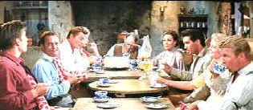

| Flaming Star/ B, B |
| Fox/1960/92/ANA 2.35 |
It's Elvis in another
Western. Four years after making his screen debut in Love Me
Tender, Elvis Presley starred in Flaming Star. It's a more
substantial role and an entirely different Elvis as far as acting goes.
This time out Presley plays half-breed Westerner Pacer Burton with
convincing authority. He's moody, volatile, and has a strong screen
presence, with an edge of danger, elements totally missing from his
earlier Western. I might add that while he does sing a couple of songs, it
wasn't even necessary. And this time out the songs are more
naturally integrated.
 |
|
A widescreen Western meal.
©Fox
|
Flaming Star is a solid
Western drama about a half-breed son in a small Texas community. He's an
outsider, but it's been kept under the carpet, until the threat of a Kiowa
uprising polarizes the community and Burton family. All sorts of tensions
are introduced into the Western landscape and the family must deal with
many feelings that need to be addressed. The unadorned screenplay by
Clair Huffaker and Nunnally Johnson is intelligent with some
interesting twists and turns. Script elements are time-honored and true to
the genre.
Directed by Don Siegel, a director who knows his
way around storytelling. There are clichés to be dealt with in Flaming
Star, but Siegel's action style keeps things fresh and covers any dull
passages up with some ambling sagebrush and Western horse play.
Presley gets a good co-star in Steve Forest as
half-brother Clint. Forest is a stolid Western presence. John McIntire and
Delores Del Rio play the Burton parents. McIntire is excellent. This is one of the better roles I have
seen the veteran actor get. Perhaps Del Rio overacts a bit, but she's an
interesting Neddy Burton, the full-blood Kiowa married to Sam. But McIntire makes up for any shortcomings in Del Rio
with his savvy performance. Barbara Eden is the nominal love interest for
the boys. She's an attractive package and I actually wanted to see more of
her.
Flaming Star gets fair treatment on DVD
from Fox. It's a good-looking picture with consisted sharp images.
Transfer elements are in good condition. Aside from a few specs of dirt,
the picture is clean. Color saturation is very nice. It looks like the
original elements have not faded. Some of the day-for-night photography is
poorly handled. Clearly, there are night time scenes that look like they
are in broad daylight. One must conclude that proper adjustments could
have been effected.
I heartily recommend catching Flaming Star.
It's nice to see Presley is a good film that is not simply a tepid star
vehicle. One lasting impression you have after leaving Flaming Star
is that Presley could have become a very strong acting presence given the
right kind of screen roles. |
|
|
|

Selections from the Feature
Archive include articles on Akira Kurosawa, Frank Darabont, Blonde Bimbos, Hollywood Street Gangs, or Vietnam: The Hollywood Pariah, and many
more....
A Western is a Western is a Western

Place or time it's still a Western from John Ford's Drums Along the Mohawk
to John Sturges' Bad Day at Black Rock.


Annie Get Your Gun/A,A-
Irving Berlin's brilliant musical gem is polished and preserved on this
Warner DVD release. An explosion of music, song, dance and color.


Mystery writer Fred Hunter digs into classic films on DVD. Check out his
insightful reviews at The Classics on DVD.

Doug Pratt's been doing almost longer than anyone in the business,
reviewing laser discs, that is, and now DVDs too. The venerable Laserdisc
Newsletter has been publishing since 1984. Pratt probably has a large
enough stock of laser discs in his house to build a DVD-proof bomb
shelter. Check out his on-line reviews at DVDlaser.com.

Manufacturer of computer-video interfaces, switchers, distribution
amplifiers, computer-video scan converters, and high resolution cable.
Found in many high end home theater systems.

World class video expert Joe Kane's home on the Internet. Look
for details on the new DVD Essentials.
|